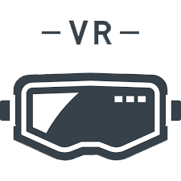

VRゴーグルで雰囲気が手に取るように！
このページでは、釣り場の雰囲気を少しでも感てもらえる様に、 360度カメラにて釣りの風景を撮影しました。 釣りと聞くと、硬派で気難しそうな人ばかりでやり難そうと思ってる方などに 雰囲気を伝えられればと思います。
このページでは、釣り場の雰囲気を少しでも感てもらえる様に、 360度カメラにて釣りの風景を撮影しました。 釣りと聞くと、硬派で気難しそうな人ばかりでやり難そうと思ってる方などに 雰囲気を伝えられればと思います。